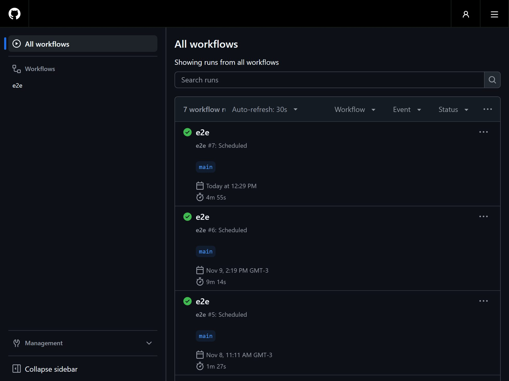
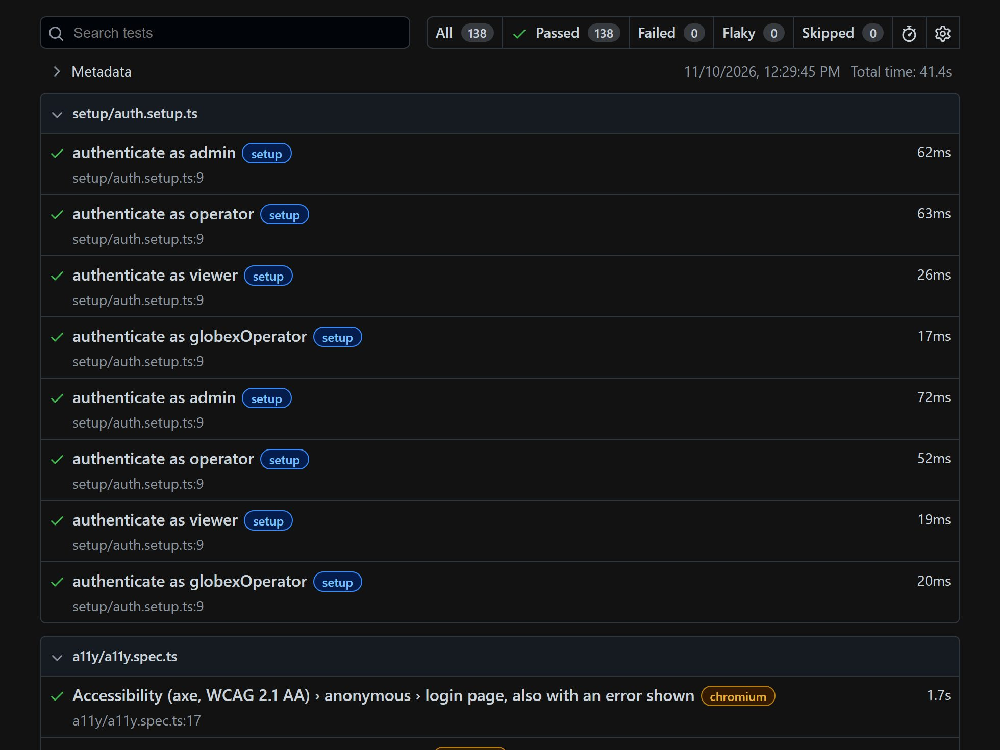
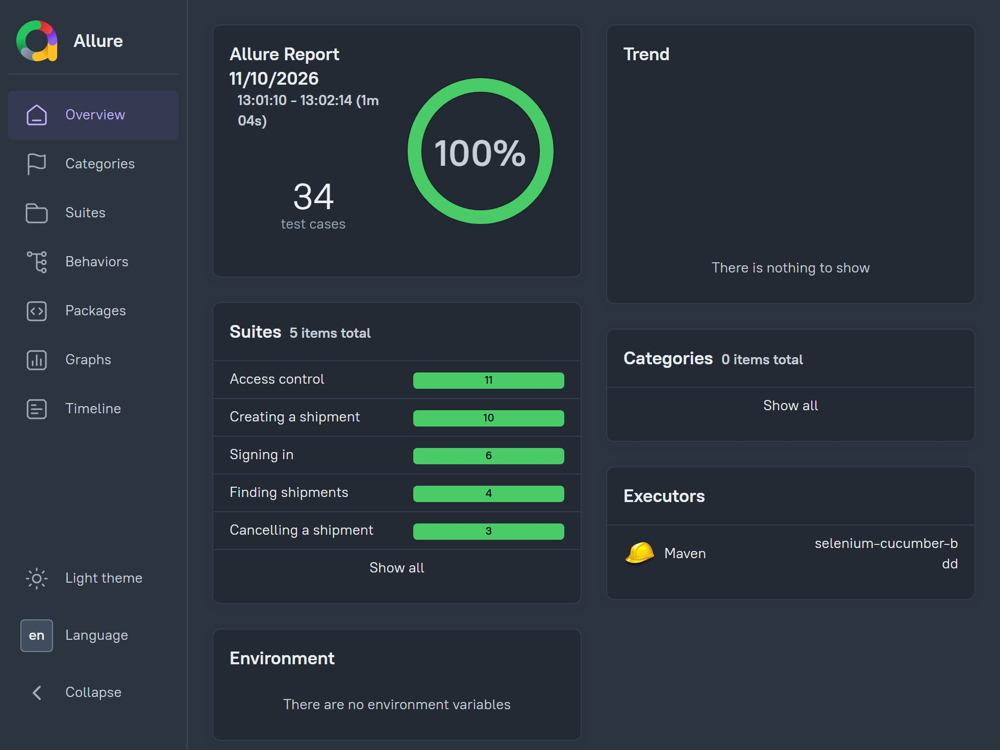
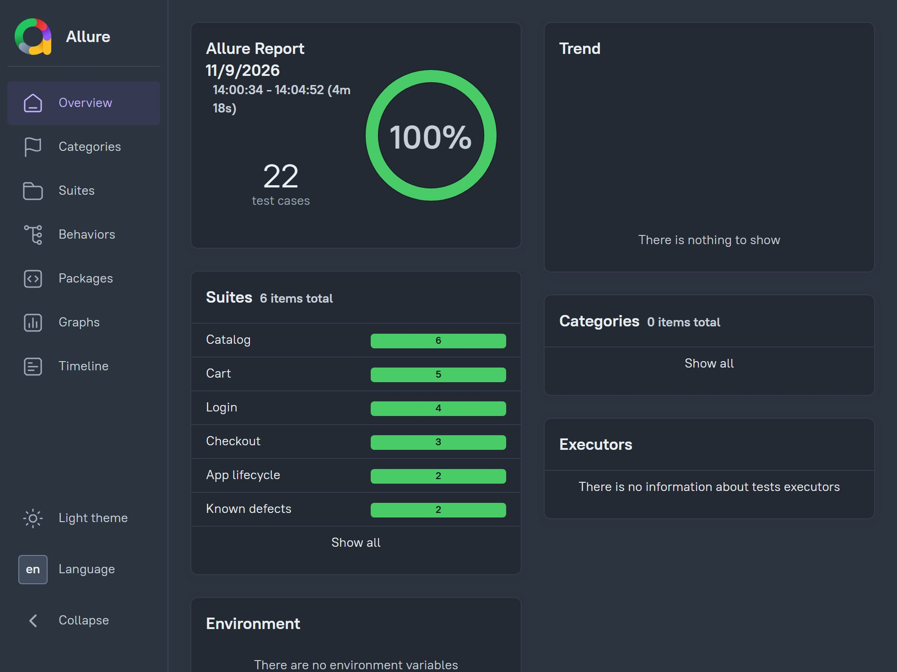

Playwright E2E framework
Persona fixtures, an RBAC matrix, tenant isolation, network mocking, race conditions and axe accessibility scans, on sharded CI.
Test suites teams trust, running on every change.

Measured on real suites, before and after.
| Measure | Before | After | Where |
|---|---|---|---|
| Flaky failures | 33% | under 5% | Selenium/Java suite in GitLab CI, iGaming |
| Regression time | ~1h30 | ~35 min | Same suite, during a federal regulation rollout |
| Daily failure triage | 2 to 3 h | under 30 min | ~950 data-quality checks on a Kafka data lake |
| Time to diagnosis | not tracked | under 15 min | Ingestion failures traced to commits and tickets |
Open source, with CI on every push.

Persona fixtures, an RBAC matrix, tenant isolation, network mocking, race conditions and axe accessibility scans, on sharded CI.

Declarative Gherkin on a Dockerized Selenium Grid, parallel scenarios and API-backed setup, with an Allure report.

The same shopping-app scenarios in both tools, each on its own emulator in CI, plus a test that pins a crash the suite found.
42 cases on a Claude-based support assistant: hallucination, prompt injection hidden in data, privacy and the JSON contract. An LLM judge plus deterministic checks, with a self-test that proves the grader.
Claude API, TypeScript, Zod
Smoke, load, stress and spike tests on a Node and PostgreSQL API. The load test finds a missing index the smoke test misses; the fix takes p95 at 50 users from 3.98 s to 3.9 ms, with the root cause shown in the query plans.
k6, PostgreSQL, Docker
136 tests against a multi-tenant billing API: forged JWTs, a permission matrix, BOLA, mass assignment and a strict OpenAPI contract.
TypeScript, Jest, OpenAPI
E2E and SQL data-quality tests on a Kafka bronze/silver/gold pipeline, with a canary job that injects real defects to prove the checks work.
Kafka, PostgreSQL, Jest
A ready-to-clone Playwright and TypeScript setup: UI and API tests, typed fixtures, contract checks, multi-environment config and sharded CI.
Playwright, Zod, GitHub Actions
What I test, and the tools I use.
UI and API suites that live in the product repository and run in CI on every change. Critical flows first: sign-up, checkout, permissions, the parts that cost money when they break.
Playwright, Selenium, Cucumber, TypeScript, Java
Android end-to-end suites in Appium and Maestro on emulators in CI, from smoke flows anyone can read to device and lifecycle checks that need code.
Appium, Maestro, WebdriverIO
Contract tests against the OpenAPI spec, role and tenant matrices, token edge cases. The authorization bugs that functional tests miss.
REST, OpenAPI, Auth0/JWT, RBAC, Postman
End-to-end checks for event-driven pipelines and SQL audits that find duplicates, gaps and drift between layers before the business reports do.
Kafka, PostgreSQL, advanced SQL
Every failure gets sorted into real bug, test instability or environment problem. I fix the root causes and keep a suite the team trusts.
Root-cause analysis, CI hygiene
As a founding QA I set up the strategy, test plans, bug templates and automation for a team with no QA process, and mentored others along the way.
Strategy, BDD, mentoring
Tools I have used on real projects.
Employee, contractor and consultant.
Independent
Quality strategy, test design and automation for startups and technology companies.
B2B benefits platform, contract
First QA at the company: built the testing strategy and the web, mobile and API automation from zero.
US logistics platform, contract
API, frontend and data-quality automation on microservices and a Kafka-fed data lake; owned the daily triage of ~950 checks.
iGaming platform
Frontline QA for Brazil’s federal sports-betting regulation rollout; cut flaky failures from 33% to under 5%.
Global fintech
Selenium/TestNG, Python and Robot Framework suites wired into CI; mentored two junior QA engineers.
IT consulting company, edtech startup
Web and mobile testing, Selenium and Postman automation, test plans and release support.
Email or LinkedIn. I reply within a day.